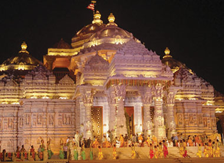
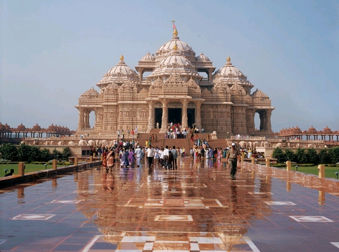
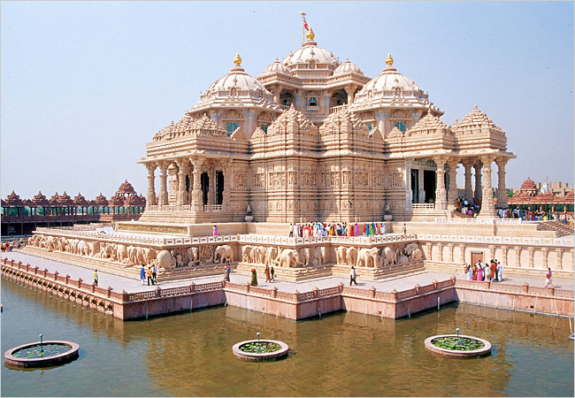
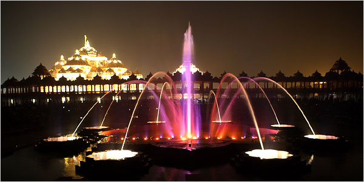

AKSHARDHAM TEMPLE
 Swaminarayan Akshardham Temple, constructed by the BAPS foundation and inaugurated on the 6th of November 2005 is claimed to be one of the biggest and most intricate religious places of worship ever constructed. Combining several completely different and contrasting architectural styles of Hindu temple architecture of India - Rajasthani, Orrisan, Gujarati, Mughal and Jain, the Akshardham Monument has been built using only marble and the red-sandstone that Delhi is famous for. Located on the banks of the Yamuna River in east Delhi, the temple has already become one of the most important tourist destinations in the city.
){kind=link}
Akshardham means the eternal, divine abode of the supreme God, the abode of eternal values and virtues of Akshar as defined in the Vedas and Upanishads where divine bhakti, purity and peace forever pervades.  It epitomises 10,000 years of Indian culture in all its breathtaking grandeur brilliantly showcasing the essence of India`s ancient architecture, traditions and timeless spiritual messages. The Akshardham experience is an enlightening journey through India`s glorious art, values and contributions for the progress, happiness and harmony of mankind. The Temple consists of 234 ornately carved pillars, 9 ornate domes, 20 quadrangled shikhars, a spectacular Gajendra Pith (plinth of 148 stone elephants) and 20,000 murtis and statues of India`s great sadhus, devotees, acharyas and divine personalities. The inner sanctum or the Garbhagruh has an 11 feet high statue of Lord Swaminarayan surrounded by statues of his first five disciples. Each of these statues is made of Paanch dhatu (five metals) in accordance with hindu tradition.  Akshardham temple was built at a cost of Rs. 200 crore by HDH Pramukh Swami Maharaj of the Bochasanwasi Shri Akshar Purushottam Swaminarayan Sanstha (BAPS) in fulfillment to the wish of his guru, Brahmaswarup Yogiji Maharaj, the fourth successor in the spiritual hierarchy of Bhagwan Swaminarayan. In only a short timespan of five years Swaminarayan Akshardham became a reality through the blessings of Pramukh Swami Maharaj, 300 million man hours of epic services rendered by 11,000 volunteers, sadhus and artisans and the immense sacrifice, austerities, prayers of hundreds of thousands of young and old devotees of BAPS Swaminarayan Sanstha. It was completed in only 5 - years a world record of sorts.
){kind=link}
){kind=link}

){kind=link}
Some of the interesting things to do inside include:
Hall of Values - Universal values for mankind presented through audio-animatronics and light and sound diorama presentations from the life of Bhagwan Swaminarayan.
Boat Ride - A 12-minute fascinating boat-ride experience of 10,000 years of India's glorious heritage. Learn about the discoveries and inventions of the rishi-scientists of India, see the world`s first university of Takshashila and sail through the caves of Ajanta-Ellora.
Musical Fountain - An intriguing combination of a large stone step-well and a Vedic yagna kund with a colorful musical fountain that echoes Vedic sentiments and prayers.
Garden of India - Sixty acres of lush lawns, gardens and exquisite bronze statues of India's child gems, valorous warriors, national figures and great women personalities inspire visitors with values and national pride.
Visitors are requested to make note of the fact that there is a strict ban on all electronic items including cameras, tobacco and pretty much everything except the clothes on your back. Thankfully there is a cloakroom where visitors can leave their worldly belongings.
Some Facts :
Height : 141.3 ft
Width : 316 ft
Length : 356 ft
Inauguration : 6-11-2005, Kartik Shukla Panchmi, Labh Pancham, V.S. 2062
Organizer : BAPS Swaminarayan Sanstha.
Creator : HDH Pramukh Swami Maharaj
Address : N.H 24, Near Noida Mor, New Delhi
How to Reach -->
The temple is located near Noida in East Delhi. The best way to reach would be to take a bus or auto to the temple as there is no Metro station nearby.
Timings :
Tuesday - Sunday 9 AM-7 PM (Mondays Closed)For more info please visit : www.akshardham.com